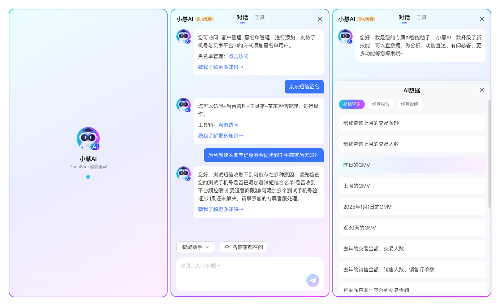
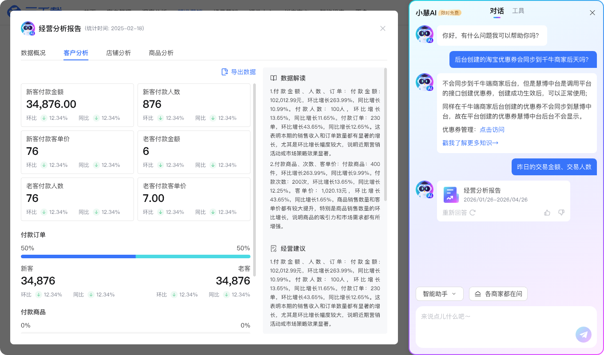

从模糊需求到可验证方案
以小慧 AI 为例，展示如何把一句模糊功能需求，整理成可讨论、可执行、可验证的设计方案。
设计工作里，真正耗费时间的部分，往往发生在画界面之前。
需求信息不完整，不同角色对目标的理解也可能不一致。设计师需要先确认：哪些内容已经明确，哪些属于设计判断，哪些问题必须由产品、技术或业务继续决策。
AI 加入设计流程后，我开始更早地用它整理资料、扩展问题和比较方向。它能够加快前期探索，但不能替项目成员做决定。业务规则、技术边界和最终方案，仍然需要对应角色共同确认。
下面以“小慧 AI 对话功能”为例，说明我如何把一句模糊的功能需求，逐步整理成能够讨论、执行和继续验证的设计方案。
这套方法分为五步，每一步都对应一个可以继续检查的产出：
- 定义设计问题：把功能描述转化为业务目标、用户任务、产品限制和设计交付。
- 区分信息状态：整理已经确认的事实、需要验证的假设和等待其他角色决策的问题。
- 比较方案方向：在投入界面细节之前，先说明各方向的收益、成本和限制。
- 形成可检查规格：明确入口、核心流程、结果承载、关键状态和实现依赖。
- 用证据继续验证：记录现有结果能够证明什么、不能证明什么，以及下一步如何验证。
第一步：先把功能描述翻译成设计问题
小慧项目最初的需求是：“在业务后台增加一个 AI 助手。”
如果直接开始设计，很快就能画出一个聊天窗口：顶部是助手名称，中间是消息记录，底部是输入框。这样的界面回答了“长什么样”，却没有说明这个功能要解决什么问题。
基于已有的项目目标和需求材料，我先从业务、用户、产品限制和设计交付四个方面梳理信息。
-
业务希望解决什么问题？
项目希望在现有产品中建立一个稳定的 AI 入口，让 AI 能力逐步进入真实业务场景。小慧一期从基础对话开始，后续继续连接经营报告、外呼话术和营销流程等业务结果。
因此，它不能只承担普通问答，还需要成为用户调用业务能力的入口。
-
用户需要完成什么任务？
用户需要在当前业务页面中打开小慧，通过自然语言提出经营分析或内容生成需求，并继续查看、预览或修改生成结果。
用户打开小慧的目的不是单纯聊天，而是继续完成已有的业务任务。
-
当前产品存在哪些限制？
小慧需要进入已经存在的业务后台，不能要求用户频繁离开当前页面。侧边栏可以承载连续对话，但空间有限，不适合完整展示经营报告、外呼话术和营销流程等复杂内容。
这意味着基础对话可以保留在侧边栏中，复杂结果需要通过结果卡片和独立详情页继续承载。
-
我需要交付什么结果？
在这个项目中，我负责的是 UX/UI 和产品视觉设计。一期需要完成 PC 侧边栏助手的核心界面，包括入口、消息流、固定输入区域和基础对话状态。同时，还需要设计对话与经营报告等业务结果之间的衔接方式。
数据接口、权限规则、模型能力和技术实现不属于 UI 设计师单独决定的范围，需要由相关角色确认后再反映到界面中。
在保留当前业务页面的前提下，设计一个能够承载基础对话，并连接后续业务结果的 AI 入口。

第二步：区分已知、假设与待确认事项
设计师能够判断的内容有边界。
在小慧项目中，我先根据需求文档、会议结论和现有方案，整理已经确认的信息：
- 小慧需要进入现有业务产品
- 一期先建立基础对话入口
- 对话后续需要承接经营报告等业务结果
- 复杂结果不能全部停留在侧边栏中
在这些信息基础上，我可以提出设计假设：侧边栏能够保留当前业务页面，可能比独立对话页更少打断用户。
这个判断属于体验设计范畴，可以通过原型和实际使用继续验证。
项目中还有一些会直接影响界面的待确认事项，但它们不能由设计师单独决定。
-
AI 可以读取哪些业务数据
这需要产品、数据和技术团队确认。设计师根据确认结果，决定界面是否需要展示数据范围、授权提示和不可用状态。
-
不同角色拥有什么数据权限
这需要产品负责人、权限系统负责人和安全相关角色确认。设计师负责呈现权限差异，以及用户无权访问时的反馈方式。
-
回答是否需要显示数据来源
产品需要先明确可信度要求，技术需要确认结果是否可以追溯。在此基础上，设计师再判断来源信息放在哪里、如何展开，以及需要展示到什么程度。
-
回答错误后如何处理
产品需要明确错误带来的业务影响，技术需要说明系统支持重新生成、修改条件还是转人工。设计师负责把已经支持的恢复方式组织成清晰流程。
-
对话内容可以保留多久
这取决于业务规则、数据安全和合规要求。设计师只能根据最终规则设计历史记录、删除入口和保存提示。
在这个过程中，我可以使用 AI 辅助整理会议记录，发现不同资料之间的矛盾，并为待确认事项标注来源、负责人和当前状态。
边界：AI 不能替相关角色制定规则，设计师也不能把尚未确认的内容写成产品结论。
第三步：先比较方向，再投入细节
当需求里出现“AI 助手”时，聊天窗口通常会成为最先想到的答案。如果立即沿着这个方向细化，很容易在界面、组件和视觉上投入大量时间，却没有确认入口形态是否适合当前产品。
围绕小慧的接入方式，我把可能的方向整理为三种。
-
独立对话页面
独立页面能够提供完整的对话空间，也方便承载复杂内容。问题是用户需要离开当前业务页面，原有任务和页面上下文容易中断。
-
悬浮窗口
悬浮窗口足够轻量，对原有页面影响较小。但它的可用空间有限，更适合简单问答。面对经营报告、内容预览和多轮业务操作时，界面很快会变得拥挤。
-
业务侧边栏
侧边栏可以保留当前页面，同时提供相对稳定的对话空间，适合作为已有业务产品中的 AI 入口。它的限制也很明确：需要处理主页面空间变化、不同分辨率适配，以及复杂结果如何离开侧边栏继续展示。
结合一期目标，小慧最终采用侧边栏方向：先在当前业务页面中建立稳定入口，再通过结果卡片和详情页承载复杂内容。
这项选择属于设计方案判断，但仍然需要经过产品目标确认和技术可行性评估。方向比较的价值不在于选出“最好看”的方案，而是尽早发现不同方案的成本和限制。
第四步：把方向整理成可以检查的规格
确定侧边栏方向后，设计工作还没有结束。
侧边栏只是一种容器。要让方案进入实际生产，还需要明确哪些规则已经确定，哪些状态依赖产品和技术确认。
已经形成的核心规格：
-
入口与页面关系
小慧作为业务页面中的 AI 入口。用户展开侧边栏后，仍然保留在当前页面，不需要切换到独立产品。
侧边栏是否压缩主页面、覆盖部分区域，或者在不同分辨率下切换形态，还需要结合具体业务页面验证。
-
基础对话结构
侧边栏内部采用连续消息流，输入区域固定在底部。用户可以查看已有回答，并继续提出新的问题。一期优先保证基础对话结构清楚、入口稳定。
-
业务结果承载
普通回答可以直接出现在消息流中。经营报告等复杂结果先通过结果卡片返回，用户点击后进入独立详情页，查看完整报告。
这样既能保留对话上下文，也避免把复杂内容压缩在侧边栏中。外呼话术类结果需要提供预览和人工修改入口，生成内容经过用户确认后，才能继续进入实际业务。

仍需跨角色确认的状态：
- 实际生成时间会影响加载反馈的形式
- 接口能力会影响是否支持中断和重新生成
- 权限规则会影响数据不可用状态
- 业务处理方式会影响错误恢复路径
- 安全与合规要求会影响历史记录和删除功能
设计师可以提前准备相应的界面框架，但不能在规则没有确认时，把某一种处理方式当成最终方案。
规格整理的目的，是让产品能够检查业务范围，技术能够确认实现条件，设计也能根据真实能力补齐正常、加载、失败和权限受限等状态。
第五步：用真实结果检查设计判断
设计提案能够说明想法，但不能自动证明方案有效。
我会尽量保留页面截图、关键状态、可运行原型和评审结论，作为后续检查设计判断的依据。
在小慧案例中，现有界面能够说明两件事。第一，侧边栏可以作为业务页面中的 AI 对话入口，并形成相对完整的消息流和输入结构。第二，自然语言提问可以继续连接经营报告等业务结果，对话不再停留在普通文本问答中。
但这些界面截图不能证明：用户是否愿意主动使用这个入口；侧边栏是否影响原有页面操作；AI 生成结果是否准确；数据权限和信息来源是否清楚；用户能否在回答失败后顺利恢复任务。
这些问题需要通过可运行原型、产品评审、技术验证和真实使用数据继续确认。设计师需要说明现有方案解决了什么，也要说明它还不能证明什么。
AI 在这套流程中的位置
在这套工作流里，我主要让 AI 协助完成以下工作：
- 整理已经提供的项目资料
- 识别不同资料之间的矛盾
- 扩展可能遗漏的设计问题
- 协助比较不同界面方向
- 检查页面状态和前后逻辑
- 把已经确认的讨论结果整理成说明
AI 不负责制定业务规则，也不能替产品、技术、安全或设计师完成专业判断。
设计师的职责，是理解已经确认的目标，发现规则对用户体验的影响，并把跨角色确认后的内容转化成清晰的界面与流程。
可以复用的检查清单
面对下一项模糊需求时，我会用下面五组问题快速检查方案是否具备继续推进的条件：
- 问题定义：业务目标、用户任务、当前限制和设计交付是否已经写清楚？
- 信息状态：每条关键信息是已确认事实、设计假设，还是待确认事项？是否记录了来源、负责人和状态？
- 方向比较：候选方向是否比较了任务连续性、内容承载能力、适配成本和主要风险？
- 方案规格：入口、核心流程、结果承载，以及正常、加载、失败和权限受限状态是否可以被检查？
- 验证证据：截图、原型、评审结论或真实数据分别证明了什么？还有哪些判断没有得到验证？
这套方法的适用边界
适合使用：需求仍然模糊、需要多个角色共同决策、存在多个可行方向，或者 AI 能力、数据与业务流程之间仍有较多未知条件的项目。
不必完整使用：目标、规则和交付范围已经明确，只需要完成低风险的视觉执行或局部组件调整时，可以缩短为必要的规格确认与结果检查。
不能替代：真实用户研究、业务决策、技术验证、安全与合规判断。缺少对应证据时，设计输出仍然只是等待验证的方案。
小慧 AI 对话功能从一句“增加 AI 助手”，逐步形成了一个可以继续检查的设计方案。它有明确的入口形态，知道需要服务哪些用户任务，也建立了从自然语言提问到经营报告等业务结果的基本路径。
与此同时，数据权限、错误恢复、信息来源和真实使用效果仍然被保留为待确认或待验证事项。
对我来说，AI 辅助设计的价值，是帮助我更早发现需求中的空白，更快整理复杂信息，并在进入界面细节之前，先确认自己的判断建立在什么依据上。
方案可以被检查，问题可以被追溯，下一步需要谁参与也更加清楚。